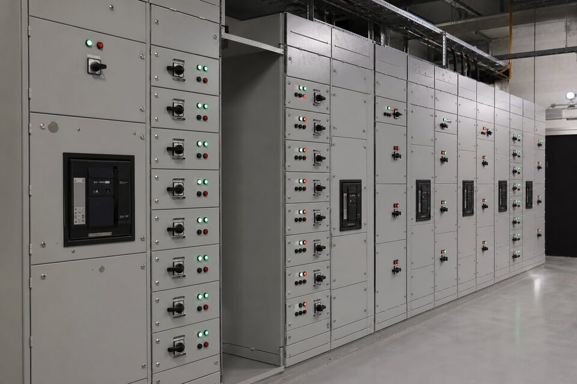

تابلو (MCC) چیست و چه نقشی دارد؟
در هر واحد صنعتی، دهها تا صدها الکتروموتور پمپها، فنها و کمپرسورها را به حرکت درمیآورند و همگی باید از یک نقطه قابل کنترل، حفاظت و مانیتور شوند. تابلوی کنترل موتور یا (MCC) همین نقطه است: مجموعهای از یونیتهای استارتر که در یک ساختار فلزی استاندارد کنار هم قرار میگیرند و از یک یا چند ورودی اصلی تغذیه میشوند. هر یونیت شامل قطعکننده حفاظتی، کنتاکتور، رله اضافه بار و در صورت نیاز درایو یا سافتاستارتر است. تمرکز تغذیه موتورها در تابلو، عیبیابی را ساده، ایمنی را قابل مدیریت و توسعه بعدی را پیشبینیپذیر میکند؛ به همین دلیل (MCC) در طرحهای نفت و گاز، پتروشیمی، آب و فولاد یک استاندارد پذیرفتهشده است.

روشهای راهاندازی موتور در (MCC)
سادهترین روش، راهاندازی مستقیم یا (DOL) است که موتور با جریان هجومی کامل به شبکه وصل میشود؛ برای موتورهای کوچک و بارهای کماینرسی انتخاب رایجی است. روش ستاره-مثلث جریان هجومی را به حدود یکسوم کاهش میدهد اما گشتاور راهاندازی نیز افت میکند، بنابراین برای بارهای گشتاور بالا مناسب نیست. سافتاستارتر با کنترل ولتاژ، شیب راهاندازی و توقف را نرم میکند و ضربه مکانیکی را میگیرد. کاملترین گزینه، درایو فرکانس متغیر است که سرعت را متناسب نیاز بار تنظیم میکند و در پمپها و فنها صرفهجویی انرژی قابل توجهی ایجاد مینماید؛ البته هزینه و تولید هارمونیک آن باید در طراحی لحاظ شود.
- (DOL): ساده و اقتصادی برای موتورهای کوچک با شبکه قوی.
- ستاره-مثلث: کاهش جریان هجومی برای موتورهای متوسط.
- سافتاستارتر: راهاندازی و توقف نرم، مناسب پمپ و نوار نقاله.
- درایو (VFD): کنترل دقیق سرعت و صرفهجویی انرژی، نیازمند بررسی هارمونیک.
ساختار فیزیکی: ثابت یا کشویی
یونیتهای (MCC) در دو ساختار کلی عرضه میشوند. در ساختار ثابت، استارتر روی صفحه نصب میشود و برای تعمیر باید برق همان ستون یا کل تابلو قطع شود؛ این گزینه برای واحدهای کوچک یا بارهای غیرحساس اقتصادیتر است. در ساختار کشویی، هر استارتر یک یونیت مستقل با وضعیتهای وصل، تست و خارج است و میتوان آن را زیر بار خارج و نمونه یدکی را جایگزین کرد؛ این قابلیت در واحدهای فرایندی که توقف تولید هزینه بالایی دارد، اهمیت حیاتی دارد. ساختار کشویی نیازمند اینترلاکهای ایمنی دقیق و فضای بیشتری در تابلو است و قیمت بالاتری دارد، اما زمان بازیابی پس از خطا را از ساعت به دقیقه کاهش میدهد.
استانداردها و آزمونها
طراحی تابلو باید با استاندارد (IEC 61439) به ویژه بخشهای مربوط به تابلوهای کنترل موتور انجام شود؛ این استاندارد الزامات گرمایشی، قدرت اتصال کوتاه، فاصلههای عایقی و آزمونهای نوعی را مشخص میکند. سازنده موظف است صحت گرمایشی ستونها در چیدمان نهایی و تحمل جریان اتصال کوتاه را اثبات کند. در پروژههای ایرانی معمولا الزامات تکمیلی کارفرما مانند نوع رنگ، درجه حفاظت، برند قطعات و مستندات آزمون نیز به مشخصات فنی اضافه میشود. آزمونهای روتین شامل تست عایقی، عملکرد مکانیکی یونیتها و صحت سیمکشی است و نتایج آنها در پرونده مدارک تحویلی ثبت میشود.
نکات سفارش و استعلام
برای استعلام دقیق، نقشه تکخطی با مشخصات هر خروجی، لیست موتورها شامل توان، ولتاژ و جریان نامی، روش راهاندازی موردنظر برای هر موتور، سطح اتصال کوتاه ورودی، شرایط محیطی مانند دما و رطوبت و درجه حفاظت موردنیاز را ارسال کنید. اگر پروژه وندورلیست دارد، برندهای مجاز قطعات اصلی را مشخص نمایید؛ تفاوت قیمت بین برندهای مختلف استارتر میتواند قابل توجه باشد. همچنین درصد فضای رزرو برای توسعه بعدی را از ابتدا تعریف کنید، چون افزودن ستون جدید پس از ساخت بسیار پرهزینهتر از پیشبینی آن در طراحی اولیه است. زمان ساخت تابلو (MCC) بسته به ابعاد معمولا چند هفته تا چند ماه است و باید در زمانبندی پروژه لحاظ شود.
هماهنگی حفاظت بین قطعکننده ورودی و استارترها نیز باید در مرحله طراحی بررسی شود تا خطا در یک خروجی، کل تابلو را بیبرق نکند.
جمعبندی
تابلو کنترل موتور، ستون فقرات توزیع برق موتورها در واحد صنعتی است. با انتخاب روش راهاندازی متناسب هر بار، تعیین ساختار ثابت یا کشویی بر اساس حساسیت توقف و ارائه مدارک کامل در استعلام، تابلویی دریافت میکنید که هم الزامات استاندارد را پاس میکند و هم هزینههای نگهداری و توقف را در طول عمر واحد کاهش میدهد.
سوالات رایج
تابلو (MCC) چیست؟
تابلوی فشار ضعیفی که وظیفه تغذیه، کنترل و حفاظت مجموعهای از الکتروموتورها را در یک واحد صنعتی بر عهده دارد؛ هر موتور معمولا یک یونیت اختصاصی شامل قطعکننده، کنتاکتور و حفاظت اضافه بار دارد.
انواع روش راهاندازی موتور در (MCC) کداماند؟
راهاندازی مستقیم (DOL)، ستاره-مثلث برای کاهش جریان هجومی، سافتاستارتر برای شیب کنترلشده و درایو فرکانس متغیر برای کنترل کامل سرعت؛ انتخاب بر اساس توان موتور و گشتاور موردنیاز بار انجام میشود.
یونیت کشویی چه مزیتی دارد؟
امکان تعویض یا نگهداری استارتر بدون بیبرق کردن کل تابلو؛ در واحدهای فرایندی که توقف تولید پرهزینه است، ساختار کشویی زمان بازیابی را به شدت کاهش میدهد.
در سفارش تابلو چه مدارکی لازم است؟
نقشه تکخطی، لیست موتورها با توان و جریان، روش راهاندازی هر موتور، شرایط محیطی نصب و الزامات استاندارد پروژه؛ این مدارک پایه طراحی و قیمتگذاری دقیق تابلو هستند.
مطالب مرتبط
با ارائه تکخطی و لیست موتورها، تابلو کنترل موتور مطابق استاندارد پروژه طراحی و عرضه میشود.
مشاهده صفحه محصول ← ثبت RFQ همین محصولتامین این تجهیزات را به پیشرو تجهیز فرتاک بسپارید
شرکت پیشرو تجهیز فرتاک تامینکننده تخصصی تجهیزات صنعتی برای پروژههای نفت، گاز، پتروشیمی، فولاد و نیروگاهی است. برای دریافت پیشنهاد فنی و قیمت، استعلام (RFQ) خود را ثبت کنید تا کارشناسان مهندسی فروش در کوتاهترین زمان پاسخ دهند.
- تامین برق صنعتیتجهیزات تابلو و حفاظتی
- تامین تجهیزات صنایع نفت و گازپکیج مواد مطابق وندورلیست